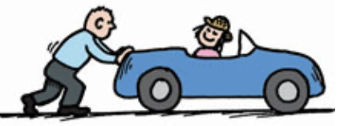

If the momentum of an object changes, then either the mass or the velocity or both change. If the mass remains unchanged, as is most often the case, then the velocity changes and acceleration occurs. What produces acceleration? We know the answer is force. The greater the net force acting on an object, the greater its change in velocity in a given time interval and, hence, the greater its change in momentum.
But something else is important in changing momentum: time—how long a time the force acts. If you apply a brief force to a stalled automobile, you produce a change in its momentum. Apply the same force over an extended period of time, and you produce a greater change in the automobile’s momentum. A force sustained for a long time produces more change in momentum than does the same force applied briefly. So, both force and time interval are important in changing momentum.
The quantity force × time interval is called impulse. In shorthand notation,
Impulse = Ft

Figure 6.3 When you push with the same force for twice the time, you impart twice the impulse and produce twice the change in momentum.